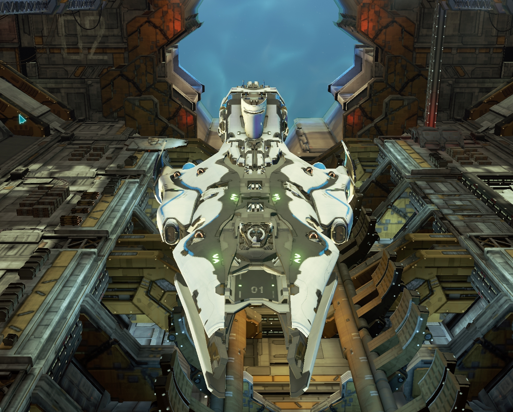

'COGNIZANT' - Stabia
So. This is what I main, and this is what I play.
What is its playstyle?
Its really a tacticians ship, in and out of ranges, around the field.
Moving is both your friend and your enemy, knowing when to be seen, and what to see.
This ship has low health, and lower consistent dps.
It makes up for having high ptw burst damage, high burst damage, and fair speed.
Note that this mild speed boost is highly advantageous vs the other Artillery cruisers (and in general),,
this is because the other two are QUITE slow (slower than average), and BOTH have arc limited primary firing solutions.
Allows me to dodge for a timem
And more than that, the ability to control range efficiently/optimally.
--
It is true, having glass cannon really unlocks damage of Particle Cannon.
So in line with those things, it fits with how I use it.
I use a few tactical systems to make this build happen.
1. Cloak and move//regen
2. Feedback Loop
It works like this.
Save for energy, queue modules on reload, cloak, move, watch and wait.
When I see a viable target, I simply cancel pte and let energy refill (should already be near top), and ptw full salvo.
Reload modules, rinse, repeat. I can choose when to recloak (and thus reload my next batch of feedback loop energy injection).
-Important Targets
I try and get nice and close, waiting in cloak for 1. me to be optimally ready, and 2. to both catch them off-guard and in a optimal situation for me.
Use Rupture Catalyst, hope it lands, and then ptw. This is enough to do hopefully INSANE damage.
Lets count, Rupture Catalyst (1.5x multi), on +20% glass cannon + ptw + full volley.
And while its max potential damage is good, its more about acheiving the per shot count to offset any enemy regeneration (and to get through shields perhaps).
This is especially true vs healers, or other mid targets in their allied healing range.
Rupture Catalyst /vs/ Siege Mode
Rupture costs no energy, so hit, follow up with ptw salvo.
Or
On the other hand, lead with ptw, when energy is drained -- then use siege mode.
This is good because the followup is near instant unlike waiting for Rupture to reload to primaries.
--Energy
Thats the name of the game.
The ability to be efficient allows me to be effective. That is why I use navi expert. Navi expert + feedback loop (crew and the right modules), highly efficient pte.
Feedback loop also allows high energy regeneration, that allows me to efficiently and quickly cycle through ptw for any targets I am aiming for.
Energy is also needed for defensive maneurvering or for shields. Having just a small tad of energy can be the difference between survival or a respawn screen.
--
full salvo glass cannon = 11520, regular is 9600.
full salvo ptw + glass cannon = 17610. (mid range)
Rupture: After rupture, its theoretically 26415 max volley damage.
ptw gives a 60.4% increase to projectile damage(and basically the entire dps multiplier).